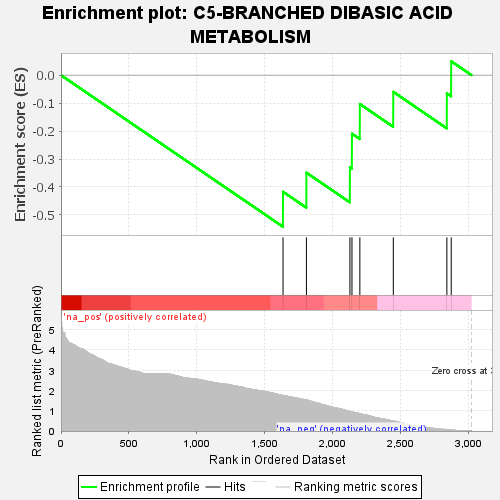
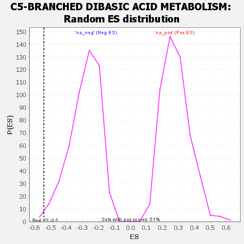

| | | Dataset | GSEA RNK clr Maaslin2 MucosalvsLuminal KO - Cecum.rnk |
| Phenotype | NoPhenotypeAvailable |
| Upregulated in class | na_neg |
| GeneSet | C5-BRANCHED DIBASIC ACID METABOLISM |
| Enrichment Score (ES) | -0.5421647 |
| Normalized Enrichment Score (NES) | -1.8979982 |
| Nominal p-value | 0.0060975607 |
| FDR q-value | 0.043133322 |
| FWER p-Value | 0.388 |
Table: GSEA Results Summary

Fig 1: Enrichment plot: C5-BRANCHED DIBASIC ACID METABOLISM
Profile of the Running ES Score & Positions of GeneSet Members on the Rank Ordered List

Fig 2: C5-BRANCHED DIBASIC ACID METABOLISM: Random ES distribution
Gene set null distribution of ES for C5-BRANCHED DIBASIC ACID METABOLISM